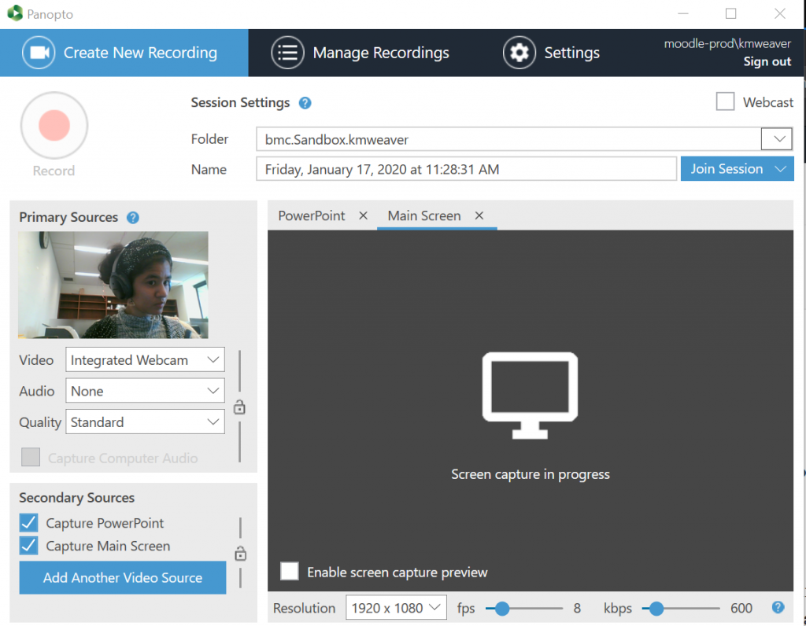

Using Panopto: A Student Guide to Uploading and Recording Videos
Overview
Panopto, Bryn Mawr's lecture capture system, is a great resource for students-enabling people to quickly
record presentations or lectures and post the recordings for classmates to review (e.g. the ability to
specifically post PowerPoint or Keynote presentations). Not only that, but Panopto also offers features
that help make the recordings themselves more interactive (e.g.
creating quizzes
or
PDFs
to insert).
What will I need Panopto for?
Regarding Panopto and coursework, it's likely that professors request that students use the software to either:
-
View pre-recorded, narrated lectures and foster discussions around them.
-
Record or upload a narrated presentation as a course assignment.
To access the software, students can either head Bryn Mawr's online panopto platform directly at
https://brynmawr.hosted.panopto.com.
Have questions about accessing Panopto or what you create with it? Feel free to check out the many supporting videos and documentation
that are available at
support.panopto.com.
If you're having playback issues, you can check to see if your computer meets Panopto's
system requirements
and whether you need to update anything. (For
Mac computers
).
(For
PC computers
).
A Quick Note Regarding Bi-Co Access:
All Bryn Mawr students should be able to access Panopto using their usual BMC login credentials. This applies to Haverford students who are
registered for bryn Mawr courses as well. Since Haverford students are given BMC credentials to use when registering and Panopto logs students
in through Moodle (thus, by extension, their Bryn Mawr login credentials), Haverford students should have little trouble accessing the software.
However, all students who run into issues launching/downloading or using Panopto, should
the Bryn Mawr College Help Desk
for assistance.
Recording & Uploading
When getting ready to record, ensure that you have:
-
A computer (preferably with a built-in webcam)
-
A reliable internet connection
-
Successfully installed the Panopto Desktop App onto the computer you will be using to record.
(Check out these links for instructions on how to freely download and install the software.
For downloading onto a Mac.
.
For downloading onto a PC.
.).
Please note:
-
If you're recording remotely and your computer doesn't have a webcam
please reach out to your Dean or instructor to see if any technological accomodations
can be made.
-
If you are located on campus, many lecutre-style classrooms are equipped to record Panopto.
To find one, go to the
Technology Enhanced Classrooms webpage
,
find your building, and look for "lecture capture" in the listing.
Starting a Recording
-
Login to your computer and open any applications and files that you will use to during your recording.
For example, if you wanted to show Powerpoint slides, a web page, and an image in a PDF document, you would open your
PowerPoint file, your web browser, and the PDF file.
Panopto will use all of the RAM, cache space, and processing power available when it is launched. Opening your presentation
materials before opening Panopto ensures that computer resources are reserved for those processes.
-
Launch the Panopto recorder, of which there are two options to do so. You can either:
1) open the Panopto desktop app that you installed onto your computer or 2) login via
Bryn Mawr's
online Panopto platform.
-
Launch Option 1: Opening the Panopto Desktop App
-
Double-click on the desktop Panopto icon (a green circiular ribbon with a blue arrow inside it,
below) in the system tray (PC) or Dock (Mac)
-
If prompted to log in, log in use your normal Bryn Mawr login credentials.
-
Launch Option 2: Visit Bryn Mawr's
Online Panopto platform
.
-
Open the website and log in with your Bryn Mawr credentials. click on the blue
Create
button and select
Record a new session
from the drop-down list. (which also includes these options: "Panopto Capture-Beta",
"Upload Media", "Webcast", "Scheduled Recording", "Build a session", "Playlist", and "New Folder").
-
Choose the Moodle course you are recording to/for (e.g. PSYC 102) from the drop-down
Folder
menu at the top of the page.
-
Give the recording a
Name
or use the default (recording day, date, and time).

-
Check the audio levels by speaking and watching the microphone bar:
-
Move the slider bar to increase or decrease volume as needed.
-
if nothing shows up in the audio level window, click
Settings
and try different options on the
Default audio source
or reposition the camera using the onscreen controls.
-
When you are finished with set up, click
Record
to start recording.
For more detailed information, including how to use on-screen features during a recording, see
Panopto's guide on How to Record a Video
and
Best Practices for Recording
.
Final Steps: Uploading the Recording
-
To end a recording, click
Stop
in the Desktop app.
-
In the dialog box that appears, choose
Done
to upload the recording to the Panopto server for
processing and streaming.
-
Lock the computer (Windows) or put it to sleep (Mac), but
do not turn it off.
The recording will finish uploading in the background as long as the computer remains on and connected
to the Internet. (Even if you log out and another user logs in.)
Uploading External Videos into Panopto
In addition to using Panopto to record lecutres, presentations, or talks at home (see
Recording Your Lecture: in a Classroom
),
students can also upload vidoes created or recoreded elsewhere into Panopto
to share them with others. This can be done by uploading the video to Panopto from any computer
(Mac or PC). This is a great way to add interactive features to pre-existing videos that you want to
use for an assignment!
Please note that media files can only be uploaded online via
Bryn Mawr's Panopto platform
and
not
through the accompanying Desktop app, whose use is strictly for video recording and editing purposes.
Check out this tech doc for more in-depth instructions on uploading vidoes to
Panopto
Need some help?
Having trouble recording a presentation in Panopto? Unable to view your professor's pre-recorded lecture?
No need to worry! Try these potential solutions or email the Bryn Mawr Help Desk at
help@brynmawr.edu
.
-
Here are some tips for
recording videos with a Mac
or
recording with a PC.
-
Recordings should upload to the network and show up automatically. If you run into any issues with this
function, feel free to reach out by
emailing the Help Desk
.
Additional support resources and documentation for Panopto
are available online, with access to
video tutorials
as well.